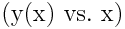
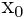
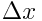
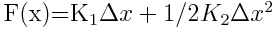
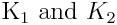

1. Create a new github repository called ‘02_roots_and_optimization’.
Add rcc02007 and zhs15101 as collaborators.
submit the clone repository URL to: https://goo.gl/forms/svFKpfiCfLO9Zvfz1
2. You’re installing a powerline in a residential neighborhood. The lowest point on the cable is 30 m above the ground, but 30 m away is a tree that is 35 m tall. Another engineer informs you that this is a catenary cable problem with the following solution
eq. 1
\(y(x)=\frac{T}{w}\cosh\left(\frac{w}{T}x\right)+y_{0}-\frac{T}{w}\).
where y(x) is the height of the cable at a distance, x, from the lowest point, \(y_{0}\), T is the tension in the cable, and w is the weight per unit length of the cable. Your supervisor wants to know which numerical solver to use when they have to install these powerlines in similar places.
Use the three solvers falsepos.m, bisect.m, and mod_secant.m to solve for the tension neededi, T, to reach y(30 m)=35 m, with w=10 N/m, and \(y_{0}\)=30 m.
Compare the number of iterations that each function needed to reach an accuracy of 0.00001%. Include a table in your README.md with:
| solver | initial guess(es) | ea | number of iterations|
| --- | --- | --- | --- |
|falsepos | | | |
|mod_secant | | | |
|bisect | | | |Add a figure to your README that plots the final shape of the powerline () from x=-10 to 50 m.
3. The Newton-Raphson method and the modified secant method do not always converge to a solution. One simple example is the function f(x) = (x-1)*exp(-(x-1)^2). The root is at 1, but using the numerical solvers, newtraph.m and mod_secant.m, there are certain initial guesses that do not converge.
Calculate the first 5 iterations for the Newton-Raphson method with an initial guess of x_i=3 for f(x)=(x-1)*exp(-(x-1)^2).
Add the results to a table in the README.md with:
### divergence of Newton-Raphson method
| iteration | x_i | approx error |
| --- | --- | --- |
| 0 | 3 | n/a |
| 1 | | |
| 2 | | |
| 3 | | |
| 4 | | |
| 5 | | |Repeat steps a-b for an initial guess of 1.2. (But change the heading from ‘divergence’ to ‘convergence’)
Model of Gold chain, from molecular dynamics simulation
4. Determine the nonlinear spring constants of a single-atom gold chain. You can assume the gold atoms are aligned in a one dimensional network and the potential energy is described by the Lennard-Jones potential as such
eq3
\(E_{LJ}(x)=4\epsilon \left(\left(\frac{\sigma}{x}\right)^{12}-\left(\frac{\sigma}{x}\right)^{6}\right)\).
Where x is the distance between atoms in nm, \(\epsilon\)=2.71E-4 aJ, and \(\sigma\)=0.2934 nm. The energy term that must be minimized is
eq4
\(E_{total}(\Delta x)=E_{LJ}(x_{0}+\Delta x)-F\Delta x\).
Where  is the distance between atoms with no force applied and  is the amount each gold atom has moved under a given force, F.
Determine when F=0 nN using the golden ratio and parabolic methods. Show your script and output in your README and include your functions
Solve for is the amount each gold atom has mov for F=0 to 0.0022 nN with 30 steps. *Use the golden ratio solver or the matlab/octave fminsearch
create a sum of squares error function sse_of_parabola.m that calculates the sum of squares error between a function  \(F(x)=K_{1}\Delta x+1/2K_{2}\Delta x^{2}\) and the Forces used in part B for each .
Use the fminsearch matlab/octave function to determine .
Plot the force vs calculated and the best-fit parabola using in part d.